Disclaimer: ProCESS/CLONES internally implements the probability distributions using the C++11 random number distribution classes. The standard does not specify their algorithms, and the class implementations are left free for the compiler. Thus, the simulation output depends on the compiler used to compile CLONES, and because of that, the results reported in this article may differ from those obtained by the reader.
We build a tumour with a single mutant A and grow it up
to 10 cells.
library(ProCESS)
# set the seed of the random number generator for repeatability
set.seed(0)
sim <- TissueSimulation(width = 600, height = 600)
# set the delta time between two time series samples
sim$history_delta <- 10
# avoid drift
sim$death_activation_level <- 50
sim$add_mutant(name = "A", growth_rates = 0.12, death_rates = 0.05)
sim$place_cell("A", 300, 300)
sim$run_up_to_size("A", 10)
#> [████████████████████████████████████████] 100% [00m:00s] Saving snapshotWe add a new mutant B as a sub-clone of A
and let the simulation evolve until B reaches 30 cells.
sim$add_mutant(name = "B", growth_rates = 0.145, death_rates = 0.06)
sim$mutate_progeny(sim$choose_cell_in("A"), "B")
sim$run_up_to_size("B", 30)
#> [████████████████████████████████████████] 100% [00m:00s] Saving snapshotWe add a further mutant C as a sub-clones for
A and let the tumour grow again up to the point at which
C consists of 25000 cells.
sim$add_mutant(name = "C", growth_rates = 0.15, death_rates = 0.06)
sim$mutate_progeny(sim$choose_cell_in("A"), "C")
sim$run_up_to_size("C", 25000)
#> [██████----------------------------------] 13% [00m:00s] Cells: 13510 [██████████------------------------------] 23% [00m:00s] Cells: 21139 [█████████████---------------------------] 30% [00m:01s] Cells: 26624 [███████████████-------------------------] 36% [00m:02s] Cells: 31626 [█████████████████-----------------------] 40% [00m:04s] Cells: 34309 [███████████████████---------------------] 45% [00m:05s] Cells: 37565 [████████████████████--------------------] 49% [00m:06s] Cells: 40301 [██████████████████████------------------] 52% [00m:07s] Cells: 43518 [████████████████████████----------------] 58% [00m:08s] Cells: 46925 [█████████████████████████---------------] 62% [00m:09s] Cells: 49711 [███████████████████████████-------------] 65% [00m:10s] Cells: 51728 [████████████████████████████------------] 69% [00m:11s] Cells: 54720 [█████████████████████████████-----------] 72% [00m:12s] Cells: 57145 [███████████████████████████████---------] 76% [00m:13s] Cells: 59702 [█████████████████████████████████-------] 80% [00m:14s] Cells: 61991 [██████████████████████████████████------] 83% [00m:15s] Cells: 63886 [██████████████████████████████████------] 84% [00m:16s] Cells: 65103 [███████████████████████████████████-----] 86% [00m:17s] Cells: 66731 [████████████████████████████████████----] 89% [00m:18s] Cells: 68606 [█████████████████████████████████████---] 92% [00m:19s] Cells: 70337 [██████████████████████████████████████--] 94% [00m:20s] Cells: 72407 [███████████████████████████████████████-] 97% [00m:21s] Cells: 74106 [████████████████████████████████████████] 98% [00m:22s] Cells: 75226 [████████████████████████████████████████] 100% [00m:22s] Saving snapshotThen, we plot the tissue and the simulation state.
plot_tissue(sim)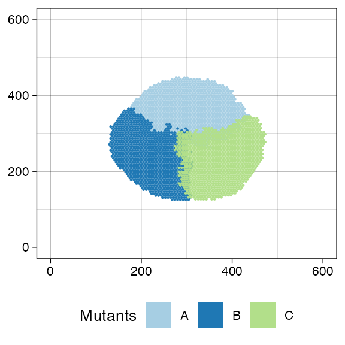
plot_state(sim)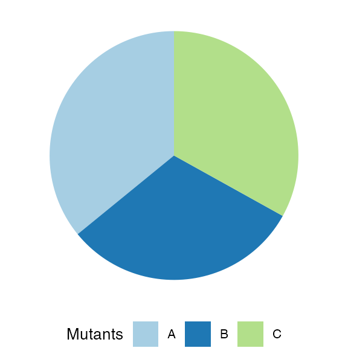
Tissue sampling level
We can collect two samples: “S1” and “S2”.
We can plot the tissue simulation after the sampling. We label the sampled region to improve readability, but it is not mandatory.
plot_tissue(sim) +
ggplot2::annotate("text", x = (145 + 215) / 2, y = (230 + 300) / 2,
label = "S1", parse = TRUE) +
ggplot2::annotate("text", x = (350 + 420) / 2, y = (300 + 370) / 2,
label = "S2", parse = TRUE)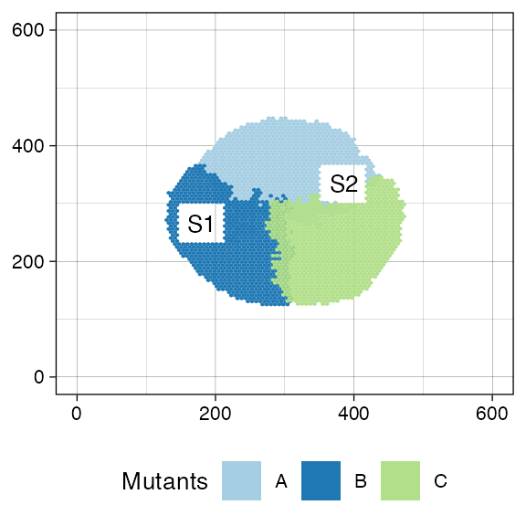
After the sampling, we can add a new mutant D as a
sub-clone of B, let the simulation continue to evolve until
the sum of the cardinalities of mutants C and
D is 100000, and sample the tissue again.
sim$add_mutant(name = "D", growth_rates = 0.8, death_rates = 0.01)
sim$mutate_progeny(sim$choose_cell_in("B", c(240, 130), c(250, 150)), "D")
sim$run_until(sim$var("C") + sim$var("D") == 100000)
#> [█---------------------------------------] 1% [00m:00s] Cells: 68305 [█---------------------------------------] 2% [00m:01s] Cells: 70860 [██--------------------------------------] 3% [00m:02s] Cells: 72492 [██--------------------------------------] 4% [00m:03s] Cells: 75281 [███-------------------------------------] 5% [00m:04s] Cells: 76598 [███-------------------------------------] 7% [00m:05s] Cells: 78735 [████------------------------------------] 8% [00m:06s] Cells: 81026 [█████-----------------------------------] 11% [00m:07s] Cells: 84386 [███████---------------------------------] 15% [00m:08s] Cells: 88101 [███████---------------------------------] 17% [00m:09s] Cells: 90935 [█████████-------------------------------] 21% [00m:10s] Cells: 94916 [███████████-----------------------------] 25% [00m:11s] Cells: 98667 [████████████----------------------------] 28% [00m:12s] Cells: 101728 [█████████████---------------------------] 31% [00m:13s] Cells: 104361 [███████████████-------------------------] 35% [00m:14s] Cells: 107995 [████████████████------------------------] 39% [00m:15s] Cells: 111822 [██████████████████----------------------] 43% [00m:16s] Cells: 115332 [███████████████████---------------------] 47% [00m:17s] Cells: 119284 [█████████████████████-------------------] 52% [00m:18s] Cells: 123463 [███████████████████████-----------------] 56% [00m:19s] Cells: 127224 [████████████████████████----------------] 58% [00m:20s] Cells: 129387 [█████████████████████████---------------] 61% [00m:21s] Cells: 131724 [██████████████████████████--------------] 63% [00m:22s] Cells: 133763 [███████████████████████████-------------] 66% [00m:23s] Cells: 136385 [█████████████████████████████-----------] 70% [00m:24s] Cells: 139149 [██████████████████████████████----------] 74% [00m:25s] Cells: 142340 [███████████████████████████████---------] 77% [00m:26s] Cells: 145189 [█████████████████████████████████-------] 80% [00m:27s] Cells: 147311 [█████████████████████████████████-------] 82% [00m:28s] Cells: 149774 [███████████████████████████████████-----] 86% [00m:29s] Cells: 152674 [████████████████████████████████████----] 89% [00m:30s] Cells: 155642 [█████████████████████████████████████---] 92% [00m:31s] Cells: 158064 [███████████████████████████████████████-] 95% [00m:32s] Cells: 160339 [████████████████████████████████████████] 99% [00m:33s] Cells: 163507 [████████████████████████████████████████] 100% [00m:33s] Saving snapshot
sim$sample_cells("S3", c(360, 80), c(430, 150))
plot_tissue(sim) +
ggplot2::annotate("text", x = (360 + 430) / 2, y = (80 + 150) / 2,
label = "S3", parse = TRUE)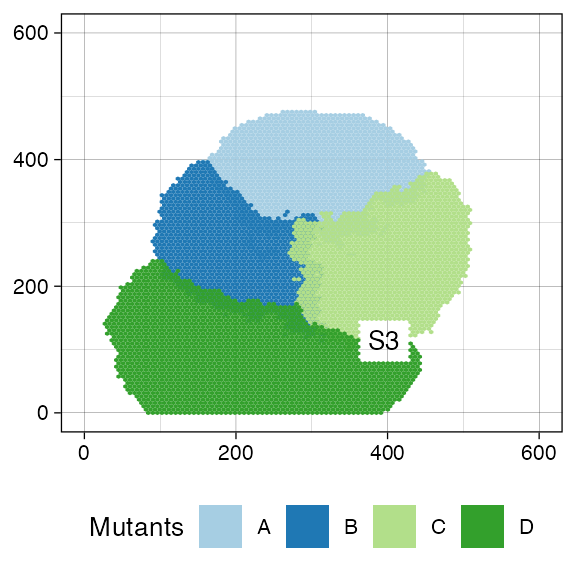
plot_state(sim)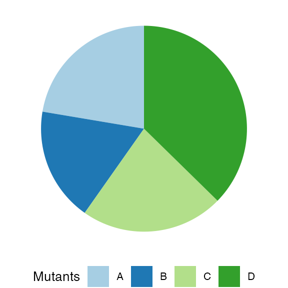
The time-series plot represents the species cardinalities along the simulation.
plot_timeseries(sim)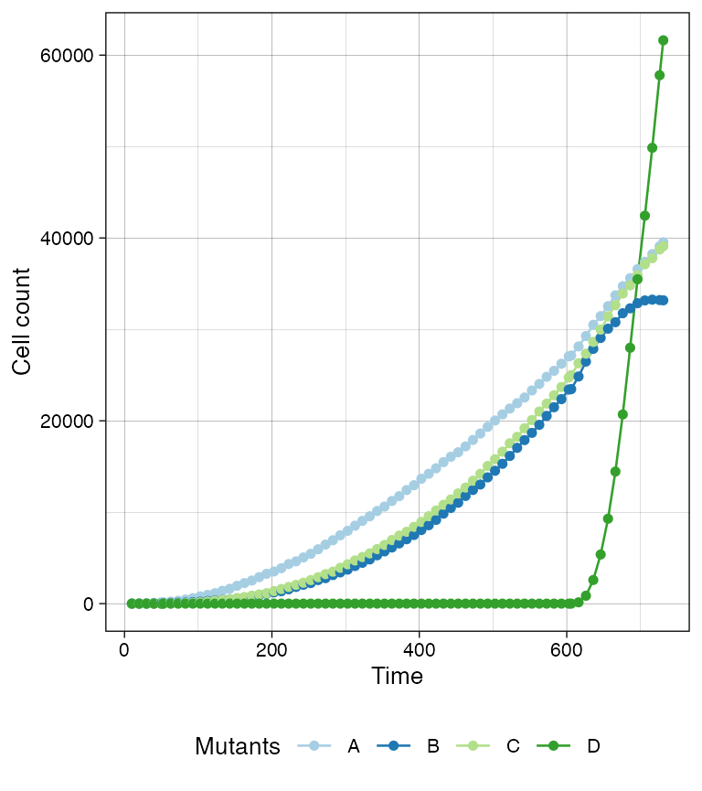
The Muller plot, instead, shows the percentage of cells in each species over the course of the simulation.
plot_muller(sim)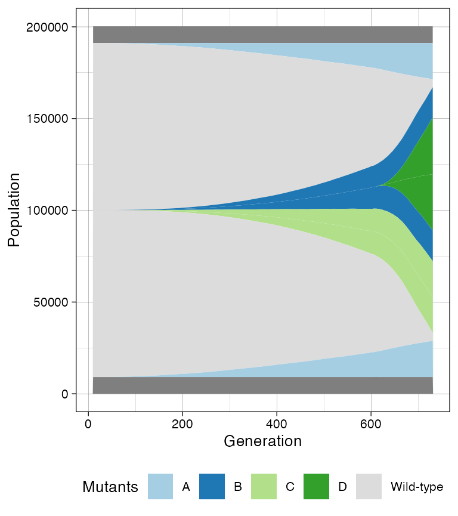
We can build the sample forest and plot it.
sample_forest <- sim$get_sample_forest()
library(dplyr)
#>
#> Attaching package: 'dplyr'
#> The following objects are masked from 'package:stats':
#>
#> filter, lag
#> The following objects are masked from 'package:base':
#>
#> intersect, setdiff, setequal, union
plot_forest(sample_forest) %>%
annotate_forest(sample_forest)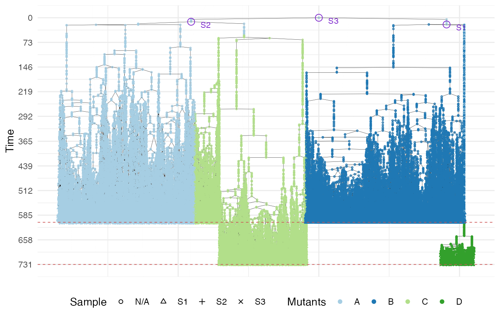
Cell genetic characterisation level
We first build the mutation engine to label each cell in the sample forest. The mutation engine pre-defined setups automatically download all the needed files. All the pre-configured setups, but “demo” requires a COSMIC account to download the signature files from the COSMIC site.
# build the mutation engine according to the pre-defined setup "demo"
m_engine <- MutationEngine(setup_code="demo",
COSMIC_account = list(email = "foo@bar.com",
password = "#########"))
#> [█---------------------------------------] 0% [00m:00s] Loading context index [████████████████████████████████████████] 100% [00m:00s] Context index loaded
#> [█---------------------------------------] 0% [00m:00s] Loading RS index [███████████-----------------------------] 27% [00m:01s] Loading RS index [██████████████████████------------------] 54% [00m:02s] Loading RS index [████████████████████████████████--------] 78% [00m:03s] Loading RS index [████████████████████████████████████████] 100% [00m:03s] RS index loaded
#> [█---------------------------------------] 0% [00m:00s] Loading germline [████████████████████████████████████████] 100% [00m:00s] Germline loadedWe must genomically characterise the tissue simulation mutants, providing passenger mutation rates and the list of driver mutations.
# genetically characterise the mutants
m_engine$add_mutant("A", passenger_rates = c(SNV = 2e-9, indel = 2e-9),
drivers = list(Mutation("22", 16085675, "GCCTCCCGA", "G"),
CNA("D", "22", 22453799, 200000,
allele = 1)))
#> [█---------------------------------------] 0% [00m:00s] Retrieving "A" SIDs [█---------------------------------------] 0% [00m:00s] Found 22 [█---------------------------------------] 0% [00m:00s] Reading 22 [█████████-------------------------------] 22% [00m:01s] Reading 22 [█████████████████████-------------------] 51% [00m:02s] Reading 22 [█████████████████████████████████-------] 81% [00m:03s] Reading 22 [████████████████████████████████████████] 100% [00m:03s] "A"'s SIDs validated
m_engine$add_mutant("B", passenger_rates = c(SNV = 1e-9, indel = 2e-9,
CNA = 1e-9),
drivers = list(SNV("22", 16050185, "C", allele = 1),
CNA(type = "A", chr = "22",
from = 16485130, len = 200000)))
#> [█---------------------------------------] 0% [00m:00s] Retrieving "B" SIDs [████████████████████████████████████████] 100% [00m:00s] "B"'s SIDs validated
m_engine$add_mutant("C", passenger_rates = list(SNV = 2e-8, indel = 2e-9),
drivers = list(SNV("22", 32786322, "G"),
list("DGCR8 P26L", allele = 1)))
#> [█---------------------------------------] 0% [00m:00s] Retrieving "C" SIDs [████████████████████████████████████████] 100% [00m:00s] "C"'s SIDs validated
m_engine$add_mutant("D", passenger_rates = list(SNV = 2e-9, indel = 2e-9),
drivers = list(SNV("22", 51240420, "T")))
#> [█---------------------------------------] 0% [00m:00s] Retrieving "D" SIDs [████████████████████████████████████████] 100% [00m:00s] "D"'s SIDs validatedWe also need to declare the exposures along the simulation.
# add SNV and indel default exposures. This will be used from simulated time 0
# up to the successive exposure change.
m_engine$add_exposure(coefficients = c(SBS13 = 0.2, SBS1 = 0.8))
m_engine$add_exposure(c(ID2 = 0.6, ID13 = 0.2, ID21 = 0.2))
# add a new SNV exposure that will be used from simulated
# time 100 up to the successive exposure change.
m_engine$add_exposure(time = 100, c(SBS5 = 0.3, SBS2 = 0.2, SBS3 = 0.5))
m_engine$add_exposure(time = 120, c(SBS5 = 0.3, SBS2 = 0.2, SBS3 = 0.5,
ID1 = 0.8, ID9 = 0.2))
m_engine
#> MutationEngine
#> Passenger rates
#> "A":
#> [0,inf): {SNV: 2e-09, indel: 2e-09}
#> "B":
#> [0,inf): {SNV: 1e-09, indel: 2e-09, CNA: 1e-09}
#> "C":
#> [0,inf): {SNV: 2e-08, indel: 2e-09}
#> "D":
#> [0,inf): {SNV: 2e-09, indel: 2e-09}
#>
#> Driver mutations
#> "A":
#> (chr22(16085675)[GCCTCCCGA>G]) on random allele
#> CNA("D",chr22(22453799), len: 200000, allele: 1)
#> "B":
#> (chr22(16050185)[A>C]) on allele 1
#> CNA("A",chr22(16485130), len: 200000)
#> "C":
#> (chr22(32786322)[T>G]) on random allele
#> DGCR8 P26L (chr22(20073563)[C>T]) on allele 1
#> "D":
#> (chr22(51240420)[G>T]) on random allele
#>
#> Timed Exposure
#> SBS Timed Exposures
#> [0, 100[: {"SBS1": 0.8, "SBS13": 0.2}
#> [100, 120[: {"SBS2": 0.2, "SBS3": 0.5, "SBS5": 0.3}
#> [120, ∞[: {"SBS2": 0.2, "SBS3": 0.5, "SBS5": 0.3}
#>
#> indel Timed Exposures
#> [0, 120[: {"ID13": 0.2, "ID2": 0.6, "ID21": 0.2}
#> [120, ∞[: {"ID1": 0.8, "ID9": 0.2}We are now ready to build the phylogenetic forest.
# place mutations on the sample forest assuming 1000 pre-neoplastic SNVs and
# 500 indels
phylo_forest <- m_engine$place_mutations(sample_forest, 1000, 500)
#> [█---------------------------------------] 0% [00m:00s] Placing mutations [███████████████████████████████---------] 77% [00m:01s] Placing mutations [████████████████████████████████████████] 100% [00m:01s] Mutations placedThe phylogenetic forest maintains the genome mutations (SBSs, indels, and CNAs) of all the sampled cells.
mutations <- phylo_forest$get_sampled_cell_mutations()
head(mutations)
#> cell_id chr from allele ref alt type cause class
#> 1 1386432 22 16080424 0 GTA G indel ID1 pre-neoplastic
#> 2 1386432 22 16129596 0 T A SNV SBS1 pre-neoplastic
#> 3 1386432 22 16130490 0 G A SNV SBS1 pre-neoplastic
#> 4 1386432 22 16131174 0 A G SNV SBS1 pre-neoplastic
#> 5 1386432 22 16156621 0 T TG indel ID1 pre-neoplastic
#> 6 1386432 22 16192291 0 TC T indel ID1 pre-neoplastic
CNAs <- phylo_forest$get_sampled_cell_CNAs()
head(CNAs)
#> cell_id type chr begin end allele src.allele class
#> 1 1386432 D 22 22453799 22653798 1 NA driver
#> 2 1624019 D 22 22453799 22653798 1 NA driver
#> 3 1634750 D 22 22453799 22653798 1 NA driver
#> 4 1668838 D 22 22453799 22653798 1 NA driver
#> 5 1666840 D 22 22453799 22653798 1 NA driver
#> 6 1666841 D 22 22453799 22653798 1 NA driverSequencing level
We can simulate the sequencing of the collected samples by using the phylogenetic forest. For each SBS and indel mutation in the phylogenetic forest, the output reports the number of occurrences in the simulated reads, the coverage of each mutation locus, and the corresponding VAF in each of the samples.
# simulate the sequencing without normal sample and avoid progress bar
seq_results <- simulate_seq(phylo_forest, coverage = 30,
with_normal_sample = FALSE, quiet = TRUE)
head(seq_results$mutations)
#> chr from ref alt causes classes S1.NV S1.DP S1.VAF S2.NV
#> 1 22 16050185 A C B driver 6 19 0.3157895 0
#> 2 22 16064167 T C SBS3 passenger 0 19 0.0000000 0
#> 3 22 16078613 A G SBS2 passenger 0 20 0.0000000 0
#> 4 22 16080424 GTA G ID1 pre-neoplastic 6 12 0.5000000 12
#> 5 22 16085675 GCCTCCCGA G A driver 9 20 0.4500000 14
#> 6 22 16095142 A T SBS3 passenger 0 26 0.0000000 1
#> S2.DP S2.VAF S3.NV S3.DP S3.VAF
#> 1 27 0.0000000 4 36 0.11111111
#> 2 22 0.0000000 1 21 0.04761905
#> 3 26 0.0000000 1 19 0.05263158
#> 4 30 0.4000000 12 22 0.54545455
#> 5 29 0.4827586 9 21 0.42857143
#> 6 25 0.0400000 0 25 0.00000000ProCESS allows to visualise the sequencing results.
plot_VAF_histogram(seq_results, labels = seq_results$mutations["classes"],
cuts = c(0.02, 1))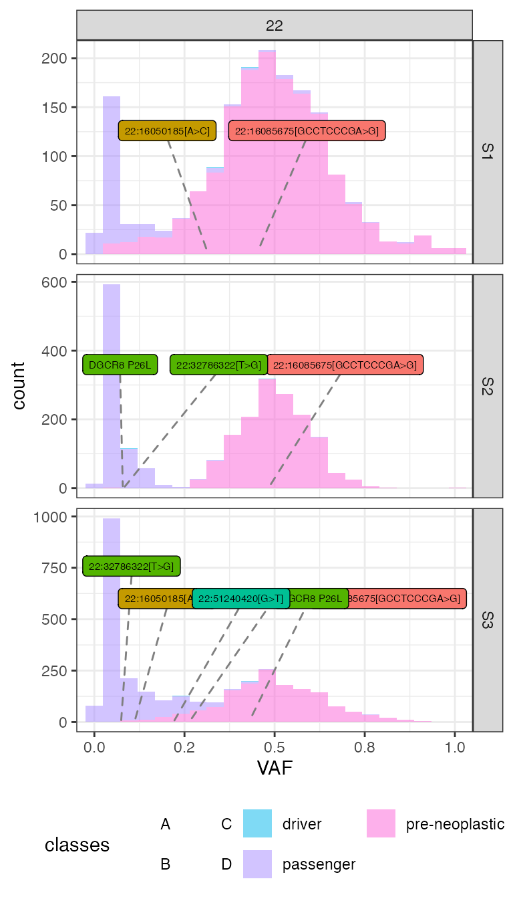
Marginal distributions can also be plotted.
plot_VAF_marginals(seq_results, labels = seq_results$mutations["classes"],
samples = c("S1", "S2", "S3"))
#> [[1]]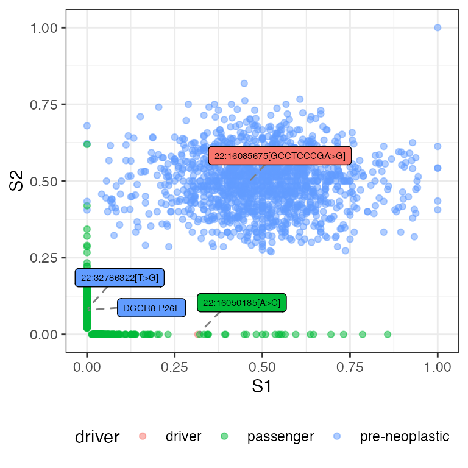
#>
#> [[2]]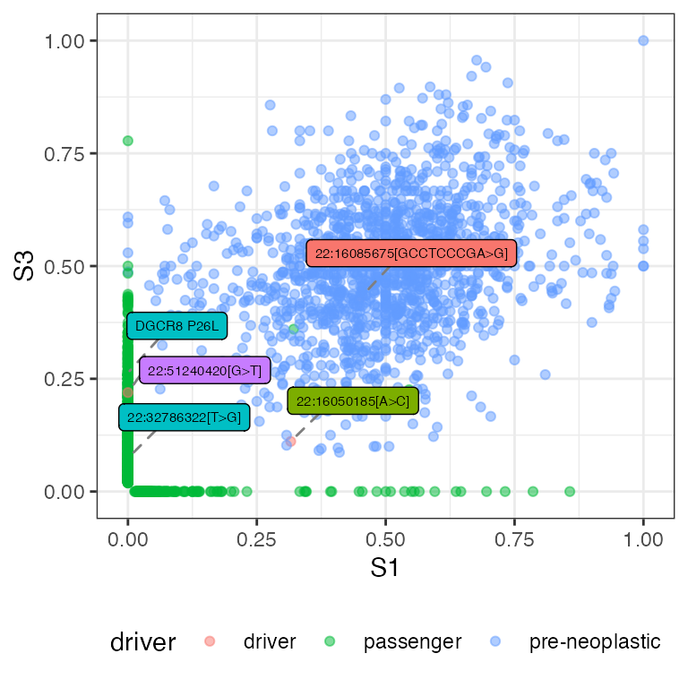
#>
#> [[3]]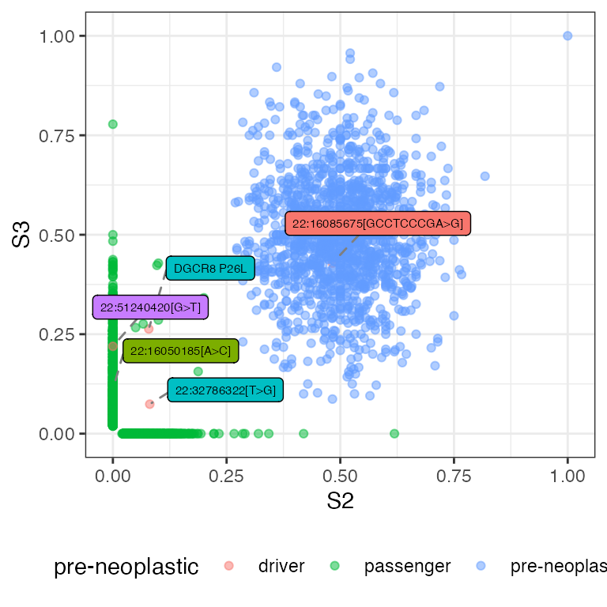
In S1 vs S3 figure, we can some spot passenger mutations occurring in both S1 and S3. Let us identify these mutations.
seq_results$mutations %>% filter(classes == "passenger" &
S1.VAF > 0 & S3.VAF > 0)
#> chr from ref alt causes classes S1.NV S1.DP S1.VAF S2.NV S2.DP
#> 1 22 21608374 A AGAAA ID2 passenger 9 28 0.3214286 0 30
#> 2 22 33944070 T A SBS1 passenger 12 22 0.5454545 0 29
#> S2.VAF S3.NV S3.DP S3.VAF
#> 1 0 9 25 0.3600000
#> 2 0 7 31 0.2258065